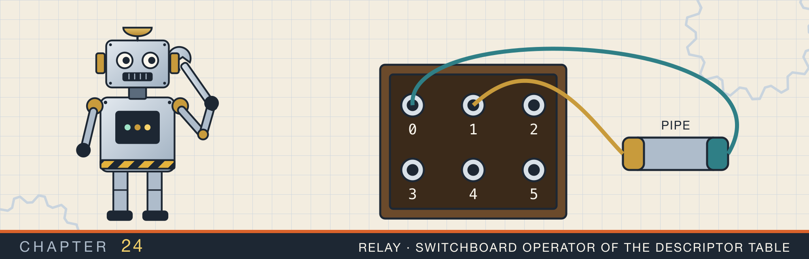
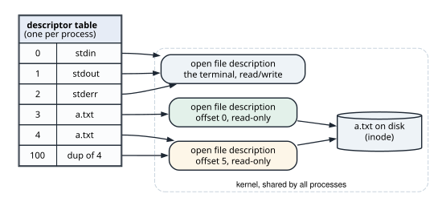
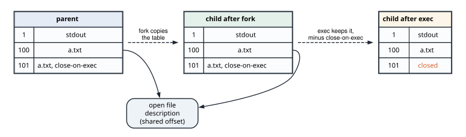
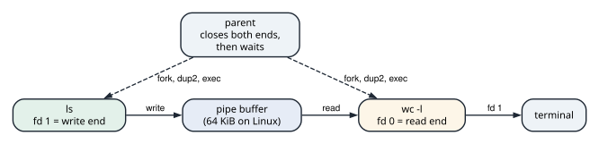

File descriptors, fork, and pipes
This chapter covers
- The descriptor table, the open file descriptions it points at, and the lowest-free-number rule
- What
forkcopies, whatexeckeeps, and why the child of a threaded program must be careful - Pipes: a kernel buffer with a read end and a write end, and when a reader sees end-of-file
ls | wc -lbuilt by hand withpipe,fork,dup2, andexecvp- A write end left open, which makes a reader wait forever
- Close-on-exec, and the descriptors a child inherits without it
Chapter 2 said that open returns a small number, the file descriptor, and that later calls name the
file by that number. Chapter 20 used the same numbers for sockets. This chapter looks at the table that
holds those numbers. It shows what happens to the table when a process starts another program. Then it shows how a shell uses the table to join two programs with a pipe.
The chapter’s program, fd_table, does the shell’s work with raw system calls from the libc crate. It
watches descriptor numbers being handed out and reused. It builds ls | wc -l, then breaks it by keeping
one descriptor open too long. Last, it checks which descriptors a child process inherits.
24.1 The descriptor table
Every process has a descriptor table. An entry maps a small number to an open file in the kernel. The kernel creates the first three entries for most programs: 0 is standard input, 1 is standard output, and 2 is standard error.
An entry does not point at the file on disk directly. It points at an open file description, a kernel
object that one open call creates. The description holds the state of that one opening: the current
offset, and flags such as read-only or O_APPEND. The description points at the file itself (figure 24.1).

Three rules follow from this layout:
- Two
opencalls on one file give two descriptions. Each has its own offset, so reading through descriptor 3 does not move descriptor 4. - Duplicating a descriptor shares the description.
dup,dup2, andfcntlwithF_DUPFDadd an entry that points at an existing description. A read through either number moves the offset of both. openreturns the lowest free number. When descriptor 3 is closed, the nextopenreturns 3 again.
A description lives as long as some entry points at it. close removes one entry. The description, and
for a pipe or socket the connection behind it, goes away when the last entry is closed.
The table has a limit, set per process by RLIMIT_NOFILE. A program that never closes its descriptors reaches the limit. Every later open, accept, or socket then fails with EMFILE, “Too many open files”. In Rust, a File or a TcpStream closes its descriptor when it is dropped, which prevents most of
these leaks.
24.1.1 Watching the numbers
On Linux and macOS, the directory /dev/fd lists the calling process’s open descriptors. open_fds reads
it:
use std::{
ffi::CString,
fs::{self, File},
io::{self, Read, Write},
os::fd::{AsRawFd, FromRawFd, OwnedFd, RawFd},
path::Path,
thread,
time::Duration,
};
/// The descriptors open in this process, read from `/dev/fd`.
///
/// Reading the directory opens one more descriptor, which is in the list.
fn open_fds() -> io::Result<Vec<RawFd>> {
let mut fds: Vec<RawFd> = fs::read_dir("/dev/fd")?
.filter_map(Result::ok)
.filter_map(|entry| entry.file_name().to_str()?.parse().ok())
.collect();
fds.sort_unstable();
Ok(fds)
}Each directory entry is named after a descriptor number. The second filter_map keeps the names that parse
as numbers. Reading the directory needs a descriptor of its own, so that one is in the list too.
main opens the same file twice, closes the first descriptor, and opens it a third time:
fn main() -> io::Result<()> {
// ...
println!("open at start: {:?}", open_fds()?);
let first = File::open(&path)?;
let second = File::open(&path)?;
println!(
"opened two files: fd {} and fd {}",
first.as_raw_fd(),
second.as_raw_fd()
);
let freed = first.as_raw_fd();
drop(first);
let third = File::open(&path)?;
println!(
"closed fd {freed}, opened another: fd {}\n",
third.as_raw_fd()
);
// ...
}The output shows both rules:
open at start: [0, 1, 2, 3]
opened two files: fd 3 and fd 4
closed fd 3, opened another: fd 3
At start, 0 to 2 are the standard streams and 3 is the /dev/fd directory being read. The directory is
closed when read_dir’s iterator is dropped, so the first File::open gets 3. Closing 3 frees the lowest
number, and the third open takes it again.
24.2 fork and exec
A Unix process starts another program in two steps.
forkcreates a child process that is a copy of the caller. The child gets a copy of the caller’s memory, shared copy-on-write as in section 23.2, and a copy of the descriptor table.forkreturns twice: in the parent it returns the child’s process id, and in the child it returns 0.execreplaces the program running in the process with a new one. The memory is replaced. The descriptor table is kept, except for entries marked close-on-exec, whichexeccloses.
The table copy is shallow (figure 24.2). The child’s descriptor 100 points at the same open file
description as the parent’s descriptor 100, so the two processes share one offset. After exec, the new
program finds its standard streams at 0, 1, and 2 because they were in the table before exec ran.

fork copies the table, and both copies point at the same descriptions. exec keeps the table and closes the close-on-exec entries.A shell uses the gap between the two calls. In the child, after fork and before exec, it rearranges the table. It moves a pipe end to descriptor 0 or 1 with dup2, then calls exec. The new program reads
descriptor 0 and writes descriptor 1 as always, without knowing they are a pipe.
24.2.1 What the child may do before exec
fork copies only the thread that called it. Suppose another thread held a lock at that moment, such as the memory allocator’s lock. The child’s copy of that lock stays locked forever. No thread exists in
the child to release it. A child that calls malloc can then deadlock.
So between fork and exec, the child of a multithreaded program may only make async-signal-safe calls. These are calls that take no locks, such as dup2, close, execvp, and _exit. Rust’s test harness runs tests on several threads, so the program follows this rule.
The program describes the command to run as C strings:
/// A program name and its arguments, as C strings.
struct Program(Vec<CString>);
impl Program {
fn new(args: &[&str]) -> Self {
Self(
args.iter()
.map(|arg| CString::new(*arg).expect("no NUL byte in an argument"))
.collect(),
)
}
/// The null-terminated pointer array `execvp` takes. It borrows `self`.
fn argv(&self) -> Vec<*const libc::c_char> {
self.0
.iter()
.map(|arg| arg.as_ptr())
.chain(std::iter::once(std::ptr::null()))
.collect()
}
}execvp takes an array of pointers to C strings, ending with a null pointer. argv builds that array. The
pointers point into the CStrings, so the array is valid only while the Program is alive.
spawn uses three calls:
unsafe extern "C" {
fn fork() -> pid_t; // child's id in the parent, 0 in the child, -1 on error
fn dup2(src: c_int, dst: c_int) -> c_int; // make dst refer to src's open file
fn execvp(
file: *const c_char, // program name, searched in PATH
argv: *const *const c_char, // arguments, ending with a null pointer
) -> c_int; // returns only on failure
}spawn forks, and in the child arranges descriptors 0 and 1 and runs the program:
/// Start `program` in a child process. `stdin` and `stdout`, when given,
/// become the child's descriptors 0 and 1. Returns the child's process id.
fn spawn(
program: &Program,
stdin: Option<RawFd>,
stdout: Option<RawFd>,
) -> io::Result<libc::pid_t> {
// Allocate before `fork`: the child may only make async-signal-safe calls.
let argv = program.argv();
// SAFETY: the child below calls only dup2, execvp, and _exit.
let pid = check(unsafe { libc::fork() })?;
if pid > 0 {
return Ok(pid);
}
// SAFETY: this is the child, a copy of the parent with one thread. dup2 copies
// a descriptor without its close-on-exec flag; execvp replaces the program.
unsafe {
if let Some(fd) = stdin {
libc::dup2(fd, 0);
}
if let Some(fd) = stdout {
libc::dup2(fd, 1);
}
libc::execvp(argv[0], argv.as_ptr());
libc::_exit(127)
}
}argv is built before fork, because building it allocates. In the child, dup2(fd, 1) makes descriptor 1
point at the same description as fd, closing whatever 1 was before. execvp searches PATH for the
program and does not return if it succeeds. If it fails, the child exits with status 127, which shells
report as “command not found”. The child must not return from spawn: it would go on running the
parent’s code.
The parent waits for children with waitpid:
unsafe extern "C" {
fn waitpid(
pid: pid_t, // the child to wait for
status: *mut c_int, // filled in; WEXITSTATUS(status) is the exit code
options: c_int, // 0 to wait, WNOHANG to return at once
) -> pid_t; // the child's id, 0 if WNOHANG and still running, or -1
}/// Wait for the child `pid` to exit, and return its exit status.
fn wait(pid: libc::pid_t) -> io::Result<i32> {
let mut status = 0;
// SAFETY: `waitpid` writes the status into the integer it is given.
check(unsafe { libc::waitpid(pid, &mut status, 0) })?;
Ok(libc::WEXITSTATUS(status))
}
/// Whether the child `pid` has exited, without waiting for it.
fn has_exited(pid: libc::pid_t) -> io::Result<bool> {
let mut status = 0;
// SAFETY: as in `wait`; WNOHANG returns 0 at once if the child is running.
let result = check(unsafe { libc::waitpid(pid, &mut status, libc::WNOHANG) })?;
Ok(result == pid)
}Until the parent waits for it, an exited child stays in the process table as a zombie, holding its
exit status. WNOHANG asks whether the child has exited without waiting.
24.3 Pipes
A pipe is a buffer in the kernel with two descriptors: a read end and a write end. Bytes written to the write end come out of the read end in the same order. On Linux the buffer holds 64 KiB by default.
The ends block, and the rules for that are the rules of every pipeline:
readon an empty pipe waits until some process writes.readreturns 0, end-of-file, only when the pipe is empty and every descriptor for the write end, in every process, is closed.writeto a full pipe waits until the reader makes room.writeafter every read end is closed fails. The kernel sends the writerSIGPIPE, and if the writer ignores that signal,writereturns the errorEPIPE.
A shell runs ls | wc -l in five steps (figure 24.3):
pipecreates the two ends in the shell’s table.forka child,dup2the write end onto its descriptor 1, andexecls.forka second child,dup2the read end onto its descriptor 0, andexecwc -l.- Close both ends in the shell.
- Wait for both children.

ls | wc -l after setup. Only ls holds the write end, and only wc holds the read end.Step 4 makes the pipeline finish. After it, the only write end is ls’s descriptor 1. When ls exits,
that last write end closes, and wc reads end-of-file, prints its count, and exits.
24.3.1 Building the pipeline
The C functions take and return plain descriptor numbers:
unsafe extern "C" {
fn pipe(fds: *mut c_int) -> c_int; // fills [read end, write end]; 0 or -1
fn fcntl(fd: c_int, cmd: c_int, ...) -> c_int; // F_SETFD sets flags; F_DUPFD copies
}pipe writes two numbers into an array of two. fcntl takes a command and, for most commands, one more
argument; the ... means the number of arguments varies, as with C’s printf. The program wraps the ends in
OwnedFds, which close themselves when dropped, and marks both close-on-exec:
/// Turn a C return value into an `io::Result`: -1 means `errno` holds the error.
fn check(result: libc::c_int) -> io::Result<libc::c_int> {
if result == -1 {
Err(io::Error::last_os_error())
} else {
Ok(result)
}
}
/// Set close-on-exec on `fd`, so a program started with `exec` does not get it.
fn set_cloexec(fd: RawFd) -> io::Result<()> {
// SAFETY: F_SETFD changes only the descriptor's flags.
check(unsafe { libc::fcntl(fd, libc::F_SETFD, libc::FD_CLOEXEC) })?;
Ok(())
}
/// A pipe as (read end, write end). Both ends are close-on-exec.
fn pipe() -> io::Result<(OwnedFd, OwnedFd)> {
let mut ends = [0; 2];
// SAFETY: `pipe` writes two new descriptors into the array.
check(unsafe { libc::pipe(ends.as_mut_ptr()) })?;
// SAFETY: both descriptors were just created, and nothing else owns them.
let (read_end, write_end) =
unsafe { (OwnedFd::from_raw_fd(ends[0]), OwnedFd::from_raw_fd(ends[1])) };
set_cloexec(read_end.as_raw_fd())?;
set_cloexec(write_end.as_raw_fd())?;
Ok((read_end, write_end))
}check turns the C convention, -1 with the error in errno, into an io::Result. Close-on-exec on the
pipe ends replaces the close calls a shell makes in each child. dup2 copies a descriptor without its
close-on-exec flag. So the copy at 0 or 1 survives exec, and the original pipe ends close.
ls_wc is the five steps:
/// `ls dir | wc -l`, built the way a shell builds it. `wc` writes to this
/// process's standard output.
fn ls_wc(dir: &Path) -> io::Result<()> {
let ls = Program::new(&["ls", dir.to_str().expect("UTF-8 path")]);
let wc = Program::new(&["wc", "-l"]);
let (read_end, write_end) = pipe()?;
let writer = spawn(&ls, None, Some(write_end.as_raw_fd()))?;
let reader = spawn(&wc, Some(read_end.as_raw_fd()), None)?;
drop(read_end);
drop(write_end);
wait(writer)?;
wait(reader)?;
Ok(())
}The two drop calls are step 4. The program prints the line count of a directory with three files:
ls fd_table_demo | wc -l
3
On Linux, wc prints 3 without the leading spaces.
24.3.2 A write end left open
Animation 24.1 follows the pipeline, then runs it again without step 4.
reader_waits_for_the_write_end measures the failing case. It starts wc -l on a pipe, writes two lines,
and keeps its write end open for a while:
/// Start `wc -l` on a pipe, write two lines into it, and keep the write end
/// open for `hold`. Returns whether `wc` was still running when `hold` ended.
fn reader_waits_for_the_write_end(hold: Duration) -> io::Result<bool> {
let wc = Program::new(&["wc", "-l"]);
let (read_end, write_end) = pipe()?;
let reader = spawn(&wc, Some(read_end.as_raw_fd()), None)?;
drop(read_end);
let mut writer = File::from(write_end);
writer.write_all(b"one\ntwo\n")?;
thread::sleep(hold);
let still_running = !has_exited(reader)?;
drop(writer);
wait(reader)?;
Ok(still_running)
}parent writes two lines to wc -l and holds the write end for 1 s:
2
wc still running after 1 s: true
wc had both lines after a few microseconds. It was still running after a second, because it cannot know
that no more lines will come while a write end is open. It printed 2 only after drop(writer). A real
program that forgets the drop waits forever, with nothing using the CPU and no error to report.
The same bug appears without a pipe. A process that forks a long-lived child, such as a daemon, while it holds a socket passes the socket to the child. Closing the socket in the parent then does not close the connection, because the child’s descriptor keeps the description alive.
24.4 Close-on-exec
A child inherits every descriptor that is not close-on-exec. The child can then do things the parent did not intend:
- A listening socket stays bound to its port after the parent exits, so a restarted server fails with
EADDRINUSE. - A write end of a pipe stays open, and the reader never sees end-of-file, as in section 24.3.2.
- A file opened with secrets stays readable by a program that should not have it.
Rust’s standard library sets close-on-exec on every descriptor it creates: files, sockets, and pipes. A
leak needs a descriptor made outside it, through libc or a C library. duplicate makes one each way:
/// A copy of `file`'s descriptor, numbered 100 or above, with or without
/// close-on-exec.
fn duplicate(file: &File, cloexec: bool) -> io::Result<OwnedFd> {
let command = if cloexec {
libc::F_DUPFD_CLOEXEC
} else {
libc::F_DUPFD
};
// SAFETY: F_DUPFD and F_DUPFD_CLOEXEC create a new descriptor and nothing else.
let fd = check(unsafe { libc::fcntl(file.as_raw_fd(), command, 100) })?;
// SAFETY: `fcntl` just created this descriptor, and nothing else owns it.
Ok(unsafe { OwnedFd::from_raw_fd(fd) })
}F_DUPFD creates a copy without close-on-exec, and F_DUPFD_CLOEXEC creates one with it. Both take the
lowest free number at or above 100. A high number keeps the copy away from the descriptors the child opens
for itself.
To find out what a child has open, child_has runs ls /dev/fd as a child and reads its output through a
pipe:
/// Run `program` with its standard output on a pipe, and return what it wrote.
fn output(program: &Program) -> io::Result<String> {
let (read_end, write_end) = pipe()?;
let child = spawn(program, None, Some(write_end.as_raw_fd()))?;
drop(write_end);
let mut text = String::new();
File::from(read_end).read_to_string(&mut text)?;
wait(child)?;
Ok(text)
}output drops its write end as soon as the child has it. Without that drop, read_to_string would
wait for end-of-file forever, as in section 24.3.2.
/// Whether a child started with `exec` has descriptor `fd` open.
fn child_has(fd: &OwnedFd) -> io::Result<bool> {
let listing = output(&Program::new(&["ls", "/dev/fd"]))?;
let number = fd.as_raw_fd().to_string();
Ok(listing
.split_whitespace()
.any(|name| name == number))
}fd 100 without close-on-exec, open in the child: true
fd 101 with close-on-exec, open in the child: false
pipe sets the flag in a second call, after the pipe exists. Between the two calls, another thread could
fork and exec, and its child would inherit both ends. Linux has pipe2, which takes O_CLOEXEC and
creates the ends with the flag already set. open and socket take the same flag. The standard library
uses these forms where the system has them.
24.5 The complete program
Listing 24.1 The descriptor table, ls | wc -l by hand, and close-on-exec. src/bin/fd_table.rs
//! The file descriptor table: how a process numbers its open files, what a
//! child inherits across `fork` and `exec`, and how a shell joins two programs
//! with a pipe.
//!
//! Run with: cargo run --bin fd_table
use std::{
ffi::CString,
fs::{self, File},
io::{self, Read, Write},
os::fd::{AsRawFd, FromRawFd, OwnedFd, RawFd},
path::Path,
thread,
time::Duration,
};
/// The descriptors open in this process, read from `/dev/fd`.
///
/// Reading the directory opens one more descriptor, which is in the list.
fn open_fds() -> io::Result<Vec<RawFd>> {
let mut fds: Vec<RawFd> = fs::read_dir("/dev/fd")?
.filter_map(Result::ok)
.filter_map(|entry| entry.file_name().to_str()?.parse().ok())
.collect();
fds.sort_unstable();
Ok(fds)
}
/// Turn a C return value into an `io::Result`: -1 means `errno` holds the error.
fn check(result: libc::c_int) -> io::Result<libc::c_int> {
if result == -1 {
Err(io::Error::last_os_error())
} else {
Ok(result)
}
}
/// Set close-on-exec on `fd`, so a program started with `exec` does not get it.
fn set_cloexec(fd: RawFd) -> io::Result<()> {
// SAFETY: F_SETFD changes only the descriptor's flags.
check(unsafe { libc::fcntl(fd, libc::F_SETFD, libc::FD_CLOEXEC) })?;
Ok(())
}
/// A pipe as (read end, write end). Both ends are close-on-exec.
fn pipe() -> io::Result<(OwnedFd, OwnedFd)> {
let mut ends = [0; 2];
// SAFETY: `pipe` writes two new descriptors into the array.
check(unsafe { libc::pipe(ends.as_mut_ptr()) })?;
// SAFETY: both descriptors were just created, and nothing else owns them.
let (read_end, write_end) =
unsafe { (OwnedFd::from_raw_fd(ends[0]), OwnedFd::from_raw_fd(ends[1])) };
set_cloexec(read_end.as_raw_fd())?;
set_cloexec(write_end.as_raw_fd())?;
Ok((read_end, write_end))
}
/// A copy of `file`'s descriptor, numbered 100 or above, with or without
/// close-on-exec.
fn duplicate(file: &File, cloexec: bool) -> io::Result<OwnedFd> {
let command = if cloexec {
libc::F_DUPFD_CLOEXEC
} else {
libc::F_DUPFD
};
// SAFETY: F_DUPFD and F_DUPFD_CLOEXEC create a new descriptor and nothing else.
let fd = check(unsafe { libc::fcntl(file.as_raw_fd(), command, 100) })?;
// SAFETY: `fcntl` just created this descriptor, and nothing else owns it.
Ok(unsafe { OwnedFd::from_raw_fd(fd) })
}
/// A program name and its arguments, as C strings.
struct Program(Vec<CString>);
impl Program {
fn new(args: &[&str]) -> Self {
Self(
args.iter()
.map(|arg| CString::new(*arg).expect("no NUL byte in an argument"))
.collect(),
)
}
/// The null-terminated pointer array `execvp` takes. It borrows `self`.
fn argv(&self) -> Vec<*const libc::c_char> {
self.0
.iter()
.map(|arg| arg.as_ptr())
.chain(std::iter::once(std::ptr::null()))
.collect()
}
}
/// Start `program` in a child process. `stdin` and `stdout`, when given,
/// become the child's descriptors 0 and 1. Returns the child's process id.
fn spawn(
program: &Program,
stdin: Option<RawFd>,
stdout: Option<RawFd>,
) -> io::Result<libc::pid_t> {
// Allocate before `fork`: the child may only make async-signal-safe calls.
let argv = program.argv();
// SAFETY: the child below calls only dup2, execvp, and _exit.
let pid = check(unsafe { libc::fork() })?;
if pid > 0 {
return Ok(pid);
}
// SAFETY: this is the child, a copy of the parent with one thread. dup2 copies
// a descriptor without its close-on-exec flag; execvp replaces the program.
unsafe {
if let Some(fd) = stdin {
libc::dup2(fd, 0);
}
if let Some(fd) = stdout {
libc::dup2(fd, 1);
}
libc::execvp(argv[0], argv.as_ptr());
libc::_exit(127)
}
}
/// Wait for the child `pid` to exit, and return its exit status.
fn wait(pid: libc::pid_t) -> io::Result<i32> {
let mut status = 0;
// SAFETY: `waitpid` writes the status into the integer it is given.
check(unsafe { libc::waitpid(pid, &mut status, 0) })?;
Ok(libc::WEXITSTATUS(status))
}
/// Whether the child `pid` has exited, without waiting for it.
fn has_exited(pid: libc::pid_t) -> io::Result<bool> {
let mut status = 0;
// SAFETY: as in `wait`; WNOHANG returns 0 at once if the child is running.
let result = check(unsafe { libc::waitpid(pid, &mut status, libc::WNOHANG) })?;
Ok(result == pid)
}
/// Run `program` with its standard output on a pipe, and return what it wrote.
fn output(program: &Program) -> io::Result<String> {
let (read_end, write_end) = pipe()?;
let child = spawn(program, None, Some(write_end.as_raw_fd()))?;
drop(write_end);
let mut text = String::new();
File::from(read_end).read_to_string(&mut text)?;
wait(child)?;
Ok(text)
}
/// `ls dir | wc -l`, built the way a shell builds it. `wc` writes to this
/// process's standard output.
fn ls_wc(dir: &Path) -> io::Result<()> {
let ls = Program::new(&["ls", dir.to_str().expect("UTF-8 path")]);
let wc = Program::new(&["wc", "-l"]);
let (read_end, write_end) = pipe()?;
let writer = spawn(&ls, None, Some(write_end.as_raw_fd()))?;
let reader = spawn(&wc, Some(read_end.as_raw_fd()), None)?;
drop(read_end);
drop(write_end);
wait(writer)?;
wait(reader)?;
Ok(())
}
/// Start `wc -l` on a pipe, write two lines into it, and keep the write end
/// open for `hold`. Returns whether `wc` was still running when `hold` ended.
fn reader_waits_for_the_write_end(hold: Duration) -> io::Result<bool> {
let wc = Program::new(&["wc", "-l"]);
let (read_end, write_end) = pipe()?;
let reader = spawn(&wc, Some(read_end.as_raw_fd()), None)?;
drop(read_end);
let mut writer = File::from(write_end);
writer.write_all(b"one\ntwo\n")?;
thread::sleep(hold);
let still_running = !has_exited(reader)?;
drop(writer);
wait(reader)?;
Ok(still_running)
}
/// Whether a child started with `exec` has descriptor `fd` open.
fn child_has(fd: &OwnedFd) -> io::Result<bool> {
let listing = output(&Program::new(&["ls", "/dev/fd"]))?;
let number = fd.as_raw_fd().to_string();
Ok(listing
.split_whitespace()
.any(|name| name == number))
}
fn main() -> io::Result<()> {
let dir = std::env::temp_dir().join("fd_table_demo");
fs::create_dir_all(&dir)?;
for name in ["a.txt", "b.txt", "c.txt"] {
fs::write(dir.join(name), name)?;
}
let path = dir.join("a.txt");
println!("open at start: {:?}", open_fds()?);
let first = File::open(&path)?;
let second = File::open(&path)?;
println!(
"opened two files: fd {} and fd {}",
first.as_raw_fd(),
second.as_raw_fd()
);
let freed = first.as_raw_fd();
drop(first);
let third = File::open(&path)?;
println!(
"closed fd {freed}, opened another: fd {}\n",
third.as_raw_fd()
);
println!("ls fd_table_demo | wc -l");
ls_wc(&dir)?;
println!("\nparent writes two lines to wc -l and holds the write end for 1 s:");
let still_running = reader_waits_for_the_write_end(Duration::from_secs(1))?;
println!("wc still running after 1 s: {still_running}\n");
let leaked = duplicate(&third, false)?;
let kept = duplicate(&third, true)?;
println!(
"fd {} without close-on-exec, open in the child: {}",
leaked.as_raw_fd(),
child_has(&leaked)?
);
println!(
"fd {} with close-on-exec, open in the child: {}",
kept.as_raw_fd(),
child_has(&kept)?
);
fs::remove_dir_all(&dir)
}
#[cfg(test)]
mod tests {
use super::*;
#[test]
fn a_child_writes_through_a_pipe() {
let text = output(&Program::new(&["echo", "through the pipe"])).expect("run echo");
assert_eq!(text, "through the pipe\n");
}
#[test]
fn close_on_exec_decides_what_a_child_inherits() {
let file = File::open("/dev/null").expect("open /dev/null");
let leaked = duplicate(&file, false).expect("dup");
let kept = duplicate(&file, true).expect("dup");
assert!(child_has(&leaked).expect("ls"));
assert!(!child_has(&kept).expect("ls"));
}
#[test]
fn a_reader_waits_while_any_write_end_is_open() {
let still_running = reader_waits_for_the_write_end(Duration::from_millis(200)).expect("wc");
assert!(still_running);
}
}$ cargo run --bin fd_table
open at start: [0, 1, 2, 3]
opened two files: fd 3 and fd 4
closed fd 3, opened another: fd 3
ls fd_table_demo | wc -l
3
parent writes two lines to wc -l and holds the write end for 1 s:
2
wc still running after 1 s: true
fd 100 without close-on-exec, open in the child: true
fd 101 with close-on-exec, open in the child: false
24.6 Questions that come up
“What does 2>&1 do?”
It is dup2(1, 2) in the child before exec. Descriptor 2 then points at the same description as
descriptor 1, so errors go wherever output goes, with one shared offset.
“Why does yes | head -1 stop?”
head exits after one line and closes the read end. The next write by yes gets SIGPIPE, which ends
it. A Rust program ignores SIGPIPE by default, so its write returns a BrokenPipe error instead.
“Why is fork slow for a large process, and what replaces it?”
fork copies the page tables, although the pages are shared copy-on-write. For a process
with many gigabytes mapped, that copy takes milliseconds. posix_spawn and vfork start the new program
without copying the tables, and std::process::Command uses them where it can.
“A server restarted and failed with EADDRINUSE. The old process is gone. What holds the port?”
Look for a child that inherited the listening socket. lsof -i :PORT shows which process has it open.
Another cause is a connection in TIME_WAIT, which SO_REUSEADDR allows a new listener to ignore.
“What does Too many open files mean?”
The process reached RLIMIT_NOFILE. Check /proc/PID/fd on Linux to see what is open: often it is
sockets that are never dropped, or files opened in a loop.
Summary
- A descriptor is an index into the process’s table. The entry points at an open file description, which holds the offset and flags, and the description points at the file.
openreturns the lowest free number.dup2points a chosen number at an existing description.forkcopies the table, and the copies share descriptions.execkeeps the table and closes the close-on-exec entries.- Between
forkandexec, a child of a multithreaded program may only make async-signal-safe calls. - A pipe’s reader sees end-of-file only when every write end in every process is closed. A forgotten write end makes the reader wait forever.
- Rust’s standard library opens everything close-on-exec. Descriptors made through
libcneed the flag set by hand, in the same call when the system allows it.
Chapter 25 returns to chapter 20’s epoll loop in edge-triggered mode. There, each readiness change is reported once, and a handler that reads too little stalls.
Exercises
- Run
fd_tablewith descriptor 0 closed:cargo run --bin fd_table <&-. Which number does the firstFile::openreturn, and why? - Read a few bytes from a file, then
forkwithspawnrunningcatwith the file’s descriptor as standard input. Doescatprint the whole file or the rest of it? Explain with figure 24.2. - Remove
drop(write_end)fromoutputand run the tests. Which test hangs, and which call is it waiting in? - Extend
ls_wcinto a function that takes a list of commands and connects them all, likels | sort | wc -l. How many pipes does it create, and how many descriptors does the parent close? - Replace
pipewithpipe2andO_CLOEXECunder#[cfg(target_os = "linux")], and keep the two-call version for other systems.